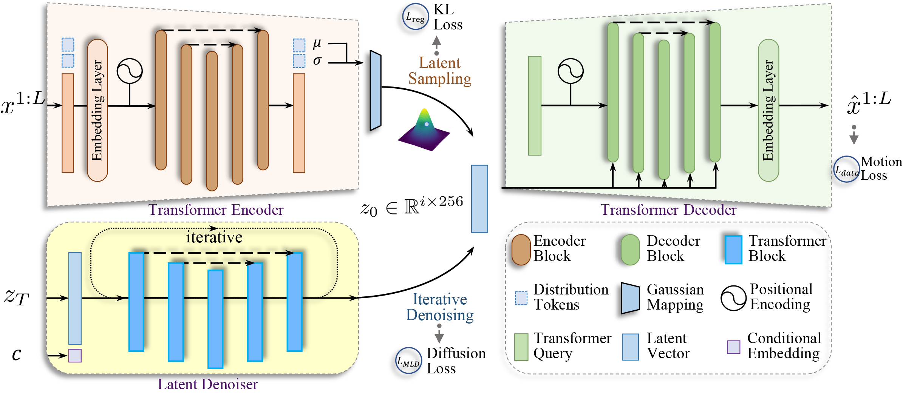

Abstract
Since human motions are highly diverse and have a property of quite different distribution from conditional modalities, such as textual descriptors in natural languages, it is hard to learn a probabilistic mapping from the desired conditional modality to human motions, the raw motion data from the motion capture system might be redundant in sequences and contain noises; directly modeling the joint distribution over the raw motion sequences and conditional modalities would need a heavy computational overhead and might result in artifacts introduced by the captured noises.

Method
To learn a better representation of the various human motion sequences, we first design a powerful Variational AutoEncoder (VAE) and arrive at a representative and low-dimensional latent code for a human motion sequence.
